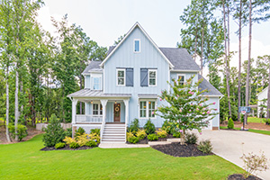

Tree care is a key element in maintaining the allure and value of suburban homes. Well-cared for trees play a pivotal role in shaping the landscape and enhancing the living experience for residents. Trees, with their graceful presence and environmental benefits, add character and charm to suburban neighborhoods. Ensuring the health and vitality of these majestic woody companions through proper tree care practices goes beyond aesthetics. Other benefits include positively impacting property value, improving energy efficiency, and enhancing the overall well-being of the community. From providing shade and privacy to fostering a habitat for wildlife, trees contribute to a harmonious and eco-friendly suburban setting. This month, we’ll take a look at the significance of tree care by professionals like Ben Bivins Tree Experts or other West Creek tree companies.
Visual Benefits of Trees
The aesthetics of healthy trees is one of the top benefits. Trees are an integral part of the suburban landscape, contributing to the beauty and charm of the neighborhood. Proper tree care ensures that trees remain healthy, well-maintained, and visually appealing, enhancing the overall aesthetics of the property and the community. Suburban neighborhoods with well-maintained trees create a positive impression and contribute to a sense of community pride. Caring for trees collectively fosters a stronger and more attractive neighborhood.
Financial Benefits of Tree Care by West Creek Tree Companies
You might not think of trees providing any financial benefits, but you would be wrong. Well-maintained trees can significantly increase the value of a suburban home. Mature trees provide shade, privacy, and curb appeal, making the property more attractive to potential buyers and contributing to a higher resale value. Plus, healthy trees provide natural shade. This reduces the need for artificial cooling during hot summer months. Strategically placed trees can help cool the home, leading to energy savings and reduced utility bills.
The Environment Appreciates Well-Cared for Trees
Trees play a vital role in improving air quality by absorbing carbon dioxide and releasing oxygen. They also help reduce soil erosion and filter pollutants, contributing to a healthier environment in the suburban setting. In addition, trees in suburban areas serve as valuable habitats for birds, insects, and other wildlife. Maintaining healthy trees and providing suitable living spaces contribute to local biodiversity and ecological balance. Properly maintained trees by professional tree care workers also play a role in managing stormwater runoff by absorbing and slowing down rainwater. This helps prevent flooding and soil erosion, reducing the impact of heavy rain on the property. Lastly, mature trees act as natural privacy screens. Large, full trees shield the home from street noise and provide a peaceful living environment. Proper tree care ensures that trees maintain their fullness and foliage, maximizing their privacy benefits.
West Creek Tree Companies Care About Your Trees

Overall, tree care is not only beneficial for individual suburban properties but also for the larger community and the environment. Regular tree care includes pruning and removing dead or diseased branches, reducing the risk of falling limbs during storms. Proper tree maintenance enhances safety for residents, neighbors, and nearby properties. Professional tree care by West Creek tree companies also helps extend the lifespan of trees. Healthy, mature trees can provide beauty and benefits to a suburban home for generations to come. Engaging in responsible tree care practices ensures that the numerous advantages provided by trees are preserved and enjoyed for years to come.